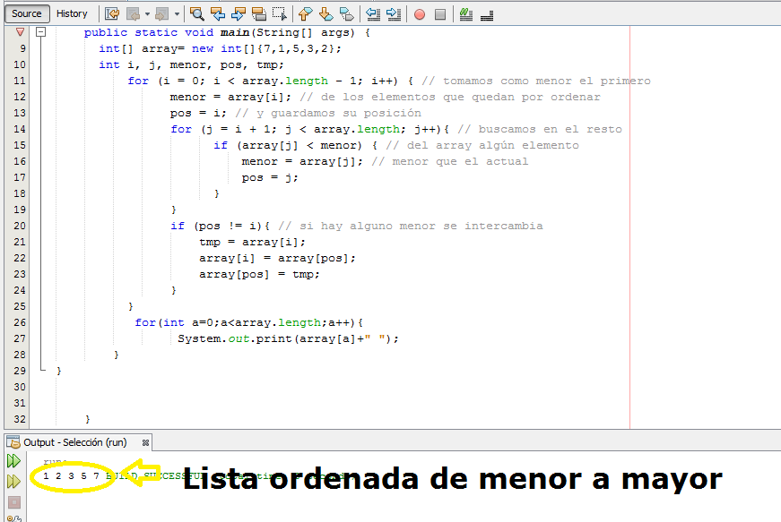

Método Por Selección
Se recorre la lista completa y se lleva el elemento menor a la primera posición de la lista, luego se procede a ubicar el menor de los restantes elementos de la lista, a la segunda posición. Este proceso se realiza sucesivamente hasta que todos los elementos de la lista queden ordenados, es decir, este método siempre busca el elemento mínimo desde la posición actual hasta el final de la lista.
h3>Primera pasada
Implementación de algoritmo en JAVA
Análisis del algoritmo
• Tiene un rendimiento constante, no hay mucha diferencia entre el mejor o peor caso.
• Realiza pocos intercambios.
• Es lento porque realiza muchas comparaciones.
• Es de fácil implementación